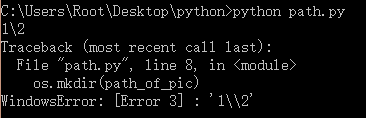
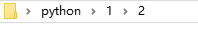

python使用mkdir函数出现错误WindowsError:[Error 3]的解决办法
错误出现背景
最近在写python爬虫抓取照片时，需要将抓到的照片按学年、学院、班级建立文件夹并将相应图片存入相应文件夹。程序中使用到了这样一段代码，即先判断即将创建的文件夹是否存在，如果不存在，则创建该文件夹，代码类似如下：
1 | # -*- coding: utf-8 -*- |
但是运行时却出现错误：1
2
3
4Traceback (most recent call last):
File "path.py", line 8, in <module>
os.mkdir(path_of_pic)
WindowsError: [Error 3] : '1\\2'

解决办法
首先我查阅了WindowsError的错误代码Error 3 的意思，微软的 官方网站对这个错误的解释为：
ERROR_PATH_NOT_FOUND
3 (0x3)
The system cannot find the path specified.
意思就是”系统找不到该路径”。
检查代码，发现也许是mkdir不能在不存在的文件夹“1”下面建立另一个文件夹，因为程序调用创建文件夹路径时，找不到文件夹“1”，所以会报错说找不到路径。
然后去搜索mkdir的相关信息，发现果然和我想得一样：mkdir只能在已存在的文件夹里创建子文件夹。
如果想实现程序想要的直接创建多级目录的目标，则需要另外一个函数“makedirs”，这个函数的功能是创建递归的目录树，即可以一次递归创建多级目录，所以我们将原程序修改为如下：1
2
3
4import os
path_of_pic = '1\\2' #当前文件夹子文件夹1，子文件夹1里又含有子文件夹2
if not os.path.exists(path_of_pic): #如果文件夹不存在则创建
os.makedirs(path_of_pic)
运行程序后，

发现二级目录已经成功创建，问题解决。